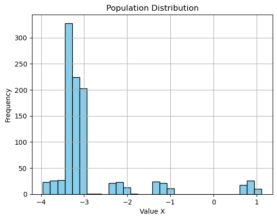
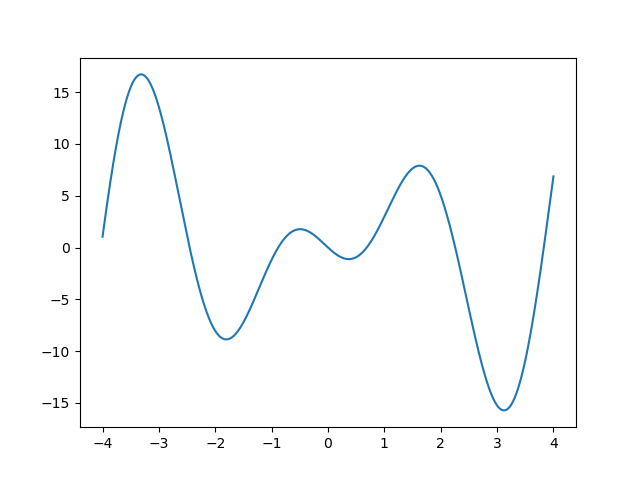

遗传算法
核心步骤
- 初始化种群：首先，随机生成一个包含多个个体（解）的初始种群。每个个体都代表问题的一个可能解。
- 适应度评估：对种群中的每个个体进行适应度评估，即计算每个个体的适应度分数，该分数表示个体对于问题的解决方案的优劣程度。
- 选择：根据适应度分数选择个体，通常是根据适应度分数的高低进行概率性选择，以便更有可能选择到适应度高的个体。常用的选择方法包括轮盘赌选择、锦标赛选择等。
- 交叉：从被选择的个体中选取一对（或多对）进行交叉操作，生成新的个体。交叉操作模拟了生物界的基因交换过程，可以通过不同的方式进行，如单点交叉、多点交叉、均匀交叉等。
- 变异：对交叉后的个体进行变异操作，以保持种群的多样性。变异操作是随机改变个体染色体中的一些基因，以产生新的解。常见的变异操作包括基因翻转、基因位移、基因重组等。
- 替换：用新生成的个体替换原来的个体，形成新一代种群。替换策略可以是全局替换（直接用新生成的个体替换原有种群）或局部替换（保留一部分原有个体，只替换其中一部分）。
- 重复迭代：重复执行步骤 2 到步骤 6，直到达到停止条件（如达到最大迭代次数、找到满意的解等）为止。
- 输出结果：在停止迭代后，输出最终的优化结果，通常是种群中适应度最高的个体所对应的解。
案例代码
import numpy
import math
import random
def objectiveFunc(x : numpy.ndarray, _max : bool = True) -> numpy.ndarray:
d = x * numpy.sin(2 * x) - 5 * x * numpy.cos(x * 2)
return d if _max else -1 * d
def genPop(size : int, start : float, end : float) -> numpy.ndarray:
return numpy.random.uniform(start, end, size)
def select(pop : numpy.ndarray, size : int, method : str = '轮盘赌', _max : bool = True) -> numpy.ndarray:
obj = objectiveFunc(pop, _max)
match method:
case '轮盘赌':
minObj = numpy.abs(numpy.min(obj))
obj += minObj
posible = obj / numpy.sum(obj)
return numpy.random.choice(pop, size, p=posible, replace=False)
case _:
...
def encode(x: float, start: float, end: float, step: int = 100) -> str:
"""
把数据平分成step份，然后x落在哪部分，获取对应的二进制值
:param x:
:param start:
:param end:
:param step:
:return:
"""
range_bin = math.ceil(math.log2(step))
interval_length = (end - start) / step
bin_index = min(int((x - start) / interval_length), step - 1)
bin_str = bin(bin_index)[2:].zfill(range_bin)
return bin_str
def decode(bin_str: str, start: float, end: float, step: int = 100) -> float:
"""
将二进制字符串解码为原始数值
:param bin_str:
:param start:
:param end:
:param step:
:return:
"""
range_bin = math.ceil(math.log2(step))
bin_index = int(bin_str, 2)
interval_length = (end - start) / step
decoded_value = start + bin_index * interval_length + interval_length / 2
if decoded_value < -4:
decoded_value = -4
elif decoded_value > 4:
decoded_value = 4
else:
pass
return decoded_value
def cross(
start: float, end: float, step: int, size: int,
pop: numpy.ndarray, length: range, method: str = '1-2 2-3 ...', _max : bool = True
) -> numpy.ndarray:
newGensCodes = []
lastGenCode = [encode(g, start, end, step) for g in pop]
mexBinCodeLen: int = math.ceil(math.log2(step))
for i in range(len(lastGenCode) - 1):
p1 = list(lastGenCode[i])
p2 = list(lastGenCode[1 + i])
haveGenNumbers = numpy.random.choice(numpy.arange(1, 6), size=1, p=[.75, .2, .03, .015, .005])[0]
for j in range(haveGenNumbers):
random_location = numpy.random.randint(
0, mexBinCodeLen - random.randint(length.start, length.stop + 1)
)
for k in range(0, random_location, 1):
p1[k], p2[k] = p2[k], p1[k]
p11 = ''.join(p1)
p21 = ''.join(p2)
newGensCodes.append(random.choice([p11, p21]))
returnewGens = [decode(i, start, end, step) for i in newGensCodes]
return select(numpy.array(returnewGens), size, _max=_max)
def mutations(pop : numpy.ndarray, start: float, end: float, step: int) -> numpy.ndarray:
mexBinCodeLen : int = math.ceil(math.log2(step))
lastGenCodeLists = [list(encode(g, start, end, step)) for g in pop]
k = []
g : list
for g in lastGenCodeLists:
for i in range(math.ceil(step / pop.size)):
_s = g[random.randint(0, mexBinCodeLen - 1)]
s = g.copy()
s[random.randint(0, mexBinCodeLen - 1)] = '0' if _s == '1' else '1'
k.append(s)
return numpy.array(
[decode(d, start, end, step) for d in [''.join(g) for g in k]]
)
_genPop = genPop(1000, -4, 4)
for i in range(100):
_select = select(_genPop, 100, _max=True)
_cross = cross(-4, 4, 1000, 100, _select, range(1, 3))
_mutations = mutations(_cross, -4, 4, 1000)
_genPop = _mutations
print(_genPop)
"""
[-3.428 -3.428 -3.3 -3.428 -3.94 -1.38 -3.94 -1.38 -3.428 -2.404
-3.364 -3.364 -3.428 -2.34 -3.364 0.732 -3.428 -3.364 -3.38 -3.372
-3.212 -3.18 0.916 -3.436 -3.18 -2.156 -3.18 -3.18 -3.18 -3.18
-3.052 -3.324 -3.196 -3.052 -3.052 -3.06 -3.052 -3.068 -3.068 -3.052
-3.172 -3.172 -1.124 -3.188 0.924 -3.172 -3.172 -3.18 -3.684 -3.684
-3.148 -3.02 -3.084 -2.988 -3.02 -0.972 -0.972 -3.02 -3.148 -3.276
-3.444 -3.364 -3.38 -3.38 -3.38 0.716 -1.332 -3.38 -3.38 -3.38
-3.284 -3.284 -3.284 -3.284 -3.284 -3.348 0.812 -3.284 -3.796 -3.284
-3.14 -2.372 0.7 -3.396 -3.364 -3.396 -3.908 0.7 -3.396 -3.404
-3.38 -3.26 -3.252 -3.236 0.844 0.844 -2.228 -3.252 -3.252 -3.252
-3.236 -3.372 -3.244 -1.196 -3.244 -3.276 -3.244 -3.244 -3.756 -2.988
-3.204 -3.204 -3.204 -3.172 -2.18 -3.204 -3.14 -1.156 -3.204 -3.204
-2.996 -3.252 -3.252 -3.252 -3.38 -3.764 -3.252 -3.252 -3.764 -2.996
-3.556 -0.996 -3.044 -3.044 -3.172 -3.044 -3.044 -3.044 -3.044 -3.052
-3.476 -3.348 -3.86 -3.348 -3.348 -3.348 -3.348 -3.348 0.748 -1.3
-3.06 -3.06 -3.044 -3.044 -3.068 -3.06 -3.06 -2.996 -3.092 -3.06
-3.188 -2.164 -3.22 -3.188 -3.188 -3.188 -3.444 -3.188 -3.188 -3.188
-3.908 -3.396 0.7 -2.372 -3.396 0.7 0.7 -3.14 -2.372 -3.404
-3.236 -3.236 -3.236 -3.236 -2.212 -3.3 -3.236 -3.244 -3.236 -1.188
-3.244 -3.244 -3.756 -3.244 -3.236 -3.244 -3.244 -3.244 -3.244 -3.244
-3.308 -3.308 -3.052 -3.308 -3.308 -3.244 -3.308 -3.308 -3.308 -3.308
-1.14 0.908 -3.188 -3.188 -3.188 -3.188 -3.124 -3.188 -3.188 -3.188
-3.052 -3.3 -3.308 -3.308 -3.3 -3.308 -3.82 -3.308 -3.308 -3.308
-2.724 -3.764 -3.764 -3.492 -3.492 -3.748 -3.236 -3.748 -3.748 -3.748
-3.444 -3.316 -3.316 -1.396 -1.396 -3.428 -2.42 -3.38 -3.188 -3.444
-2.028 -3.18 -3.052 -3.052 -3.564 -3.052 -3.052 1.044 -3.052 -3.052
-3.204 -3.204 -3.204 -3.204 -3.204 -3.204 -2.18 -3.076 -3.204 -3.204
-2.02 -3.044 -2.02 -3.076 -3.076 -3.044 -0.996 -3.044 -3.076 -3.044
-3.108 -3.364 -2.34 -3.364 -3.38 -3.364 -3.876 -3.428 -3.364 -1.316
-3.428 -3.46 -3.364 -3.428 -3.3 -3.428 -3.444 -3.428 -3.428 -3.3
-3.244 -2.988 -3.244 -3.244 -3.244 -3.244 -3.244 0.852 -3.244 -3.244
-3.364 -3.372 -2.348 -3.372 -3.372 -2.348 -2.348 -3.388 -3.372 -1.324
-3.364 -3.364 -3.876 -3.876 -3.364 -3.364 0.732 -3.364 -3.372 -3.364
-3.444 -1.268 -3.316 -3.316 -3.316 -3.316 -3.316 -3.252 -2.292 -3.316
-3.412 -3.284 -3.284 -3.252 -3.412 0.812 0.812 -3.284 -2.26 -2.26
-3.372 -3.436 -3.372 -3.116 -3.364 -3.404 -3.372 -3.372 -3.244 -3.372
-3.26 0.844 -3.252 -3.252 0.844 -3.26 -3.252 -3.26 -3.252 -3.252
1.036 -3.092 -3.06 -1.012 -3.188 -3.572 -3.06 -3.06 -3.06 -3.06
-2.98 -2.212 -3.236 -3.236 -3.748 -3.268 -3.236 -3.3 -3.236 -3.244
-3.068 -3.068 -3.068 -3.068 -3.068 -3.324 1.028 1.028 -3.052 -3.068
-3.236 -3.236 -3.236 -2.98 -3.748 -3.236 -3.3 -3.236 -3.236 -2.98
-3.244 -3.372 -3.884 -3.372 -3.884 -3.372 0.724 -3.372 -3.244 -3.372
-3.06 -3.044 -2.02 -3.172 -3.044 -3.3 -3.556 -3.3 -3.044 -3.044
-3.332 -3.268 -3.268 -3.268 -3.268 -3.268 -3.268 -3.276 -3.396 -3.268
-3.316 -3.316 -3.828 -3.316 -3.316 -3.316 -3.316 -3.316 0.78 -3.316
-3.268 -3.396 -3.396 -3.396 -3.364 -3.396 -3.412 -3.46 -1.348 -3.46
-3.236 -3.364 -3.236 -3.748 -2.98 -3.236 -3.236 -3.748 -3.236 -3.236
-3.284 -3.292 -3.284 -3.292 -1.244 -3.26 -3.276 -3.292 0.804 -3.292
-3.3 -3.812 -3.3 -3.3 -3.3 -3.3 -3.3 0.796 -3.332 -3.428
-3.5 -3.5 -2.988 -2.988 -3.244 -2.988 -2.988 -2.988 -2.988 -3.02
-3.38 -3.252 -3.252 -3.252 -3.252 -1.204 -3.284 -3.252 -2.996 -3.284
-3.348 -3.316 -3.348 -3.348 -3.348 -3.86 -1.3 -1.3 -3.316 -3.348
-3.836 -3.812 -3.316 -1.78 -3.572 -3.828 -3.764 -3.316 -3.316 -2.804
-3.188 -3.188 -3.444 0.652 -3.38 -2.42 -3.188 -3.316 -2.42 -3.316
-3.316 -3.444 -3.316 -3.324 0.78 -3.3 -2.292 -3.3 -1.268 -3.252
-3.292 0.804 -3.292 -1.244 -1.244 -3.804 -3.276 -3.036 -3.292 -3.292
-3.012 -3.076 -3.028 -3.076 -3.14 -3.524 -2.98 -3.012 -3.012 -1.988
-3.188 -3.124 0.908 0.908 -3.06 -3.188 -3.188 -3.7 -1.14 -3.188
-3.316 -3.324 -3.252 -3.316 -3.316 -3.316 -3.316 -3.316 -3.324 -3.316
-2.164 -3.188 -3.172 -3.444 -3.444 -3.444 -3.196 -3.188 -3.188 -2.164
-1.268 -3.316 -3.316 -3.316 -3.3 -3.316 -1.268 -3.252 -3.316 -3.316
-3.572 -1.012 -3.06 -3.044 -3.06 -3.044 -3.572 -3.316 -3.06 -3.06
-3.428 -3.428 -3.428 -3.3 -3.364 0.668 -3.364 -3.428 -1.38 0.668
-3.348 -3.348 -3.348 -3.348 -3.348 -3.284 -3.284 -3.348 -3.316 -3.284
-1.22 -1.284 -1.22 -1.188 -1.348 -1.22 -1.188 -1.22 -1.188 -1.22
-3.012 -3.012 -3.02 -3.012 -3.028 -3.012 -3.012 -3.012 -3.524 -3.012
-3.316 -3.348 -3.348 -3.284 -3.348 -3.332 -3.348 -3.476 -3.092 -2.324
-3.076 -3.076 -1.028 -3.084 -3.076 1.02 -2.052 -3.076 -3.076 -3.076
-3.028 -3.028 -2.996 -3.028 -3.028 -3.54 -2.996 -2.004 -3.028 -0.98
-3.444 -3.316 -3.316 -2.292 -3.316 -3.828 0.78 -2.292 -3.316 -3.348
-3.188 -3.188 -3.188 -3.124 -3.188 -2.164 -3.196 -3.188 -3.22 -3.188
-3.076 -3.044 -3.044 -3.044 -3.172 -3.06 -3.044 -3.044 -3.3 -3.556
-3.044 -3.3 -3.3 -3.3 -3.3 -3.3 -3.3 -3.428 -3.3 0.796
-3.188 -3.124 -3.7 -3.188 -2.164 -3.188 -3.7 -1.14 -3.188 -3.444
-3.764 -3.38 -3.236 -3.252 -3.252 -3.316 -2.996 -3.252 -3.38 -3.236
-3.308 -3.3 -3.3 -3.3 -3.3 -3.3 -3.308 -3.3 -3.3 -1.252
-3.18 0.924 0.924 -3.428 -3.172 -3.172 -3.108 -2.148 -2.148 -3.172
-3.252 -2.356 -3.38 -3.892 -3.252 0.716 -3.38 -3.38 -3.38 0.716
-3.188 -3.38 -3.444 -3.956 -3.444 -3.452 -3.428 -3.444 -3.316 0.652
-3.068 -3.068 -3.068 -3.068 1.028 -3.052 -3.068 -3.004 -3.068 -3.068
-3.1 -1.02 -3.068 -3.068 -3.068 -2.044 -3.052 -3.068 -3.068 -3.58
-2.98 -2.98 -3.492 -2.996 -1.956 -3.492 -2.98 -3.108 1.116 -3.044
-3.236 -3.236 -2.212 -3.364 -3.364 -3.236 -3.748 -3.236 -3.748 -3.236
-2.18 -2.18 -3.204 -2.18 -3.172 -3.204 -3.204 -3.204 -2.18 -1.156
-3.324 -3.316 -3.316 -1.268 -3.444 -3.324 -3.828 -3.316 -3.316 -3.316
-3.06 -3.06 -2.996 -3.06 -3.06 -3.092 -3.044 -3.092 -2.036 -3.092
-3.044 0.796 -3.236 -3.3 -3.3 -1.252 -3.308 0.796 -3.3 -3.3
-3.3 -3.3 -3.3 -3.044 -3.044 -3.3 -3.3 -3.3 -3.3 -3.308
-3.236 -3.3 -3.244 -3.236 -3.236 -3.236 -3.252 -3.748 -3.236 -3.3
-2.004 -3.028 -2.996 -3.028 -3.028 -3.028 -2.996 -3.028 -3.028 -3.028
-3.028 -3.036 -2.996 1.068 -0.98 -3.028 -3.028 -2.996 -3.012 -3.156
0.844 -2.228 -3.252 -3.316 -3.26 -3.764 -2.228 -3.252 -3.316 -3.252
-3.092 -3.092 -3.092 -3.092 -3.092 -3.092 1.004 -3.348 -3.076 -2.068
-3.444 -3.444 -3.444 -3.428 -3.444 -3.38 -3.444 -3.444 -3.452 -1.396
-3.396 -3.46 -2.372 0.7 -3.396 -3.396 -3.412 -3.412 -3.268 -3.14
-3.428 -3.364 -3.364 -2.34 -3.396 -3.364 -1.316 -3.364 -3.364 -3.364
-3.044 -3.044 1.052 -3.3 -3.044 -3.044 -3.044 -3.044 -0.996 -3.044
-3.332 -3.092 -3.348 -3.348 -3.348 -2.324 -3.316 -3.316 -3.348 -1.3
-3.06 -2.996 -3.06 -3.572 -3.06 -3.06 -3.188 -2.036 -3.06 -3.188
-2.988 0.852 -1.196 -3.756 -3.244 -3.244 -3.244 -3.244 -2.22 -2.988]
"""
可视化结果分布
import matplotlib.pyplot as plt
plt.hist(_genPop, bins=30, color='skyblue', edgecolor='black')
plt.xlabel('Value X')
plt.ylabel('Frequency')
plt.title('Population Distribution')
plt.grid(True)
plt.show()
分布图

目标函数图像
